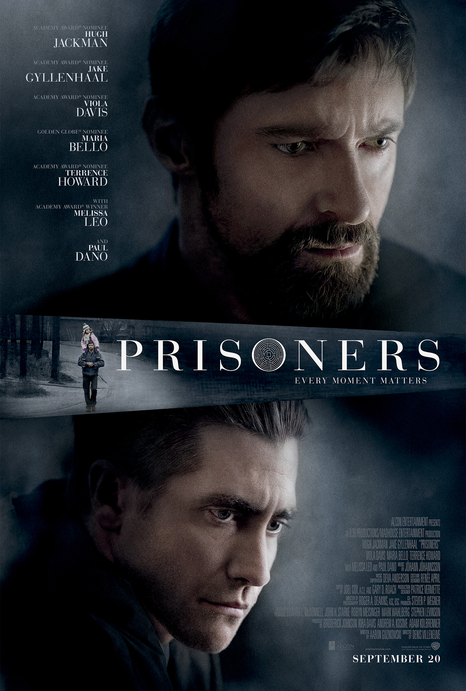

Filmy

SE7EN Dwóch detektywów – doświadczony, zbliżający się do emerytury William Somerset (Morgan Freeman) oraz młody, impulsywny David Mills (Brad Pitt) – prowadzi śledztwo w sprawie brutalnych morderstw. Szybko odkrywają, że seryjny zabójca wybiera swoje ofiary w oparciu o siedem grzechów głównych: obżarstwo, chciwość, lenistwo, pycha, pożądliwość, zazdrość i gniew. Kolejne zbrodnie są wyjątkowo makabryczne i misternie zaplanowane, a każdy trop prowadzi detektywów głębiej w umysł psychopatycznego mordercy. Śledztwo staje się nie tylko walką z czasem, lecz także próbą charakterów obu bohaterów, którzy zderzają się z własnymi słabościami i moralnymi dylematami. Gatunek i klimat „Seven” to mroczny thriller neo-noir, pełen napięcia i atmosfery beznadziei. Miasto, w którym rozgrywa się akcja, jest deszczowe, brudne i przytłaczające – stanowi niemal osobny element opowieści. Obsada Brad Pitt – detektyw David Mills Morgan Freeman – detektyw William Somerset Gwyneth Paltrow – Tracy Mills Kevin Spacey – John Doe (seryjny morderca) Znaczenie Film jest dziś uważany za klasykę gatunku. Słynie z mocnego klimatu, przemyślanej narracji i szokującego zakończenia, które na stałe zapisało się w historii kina.
„Labirynt”W małym miasteczku w Pensylwanii w dniu Święta Dziękczynienia znikają dwie kilkuletnie dziewczynki – Anna i Joy. Detektyw Loki (Jake Gyllenhaal) prowadzi śledztwo, ale tropy są niejasne i brak dowodów. Głównym podejrzanym staje się młody mężczyzna o ograniczonych zdolnościach umysłowych, Alex Jones (Paul Dano), którego aresztują, ale szybko zostaje zwolniony z powodu braku dowodów. Zrozpaczony ojciec jednej z dziewczynek, Keller Dover (Hugh Jackman), nie potrafi pogodzić się z bezradnością policji. Decyduje się działać na własną rękę – porywa Alexa i zaczyna brutalnie wymuszać na nim odpowiedzi, wierząc, że tylko w ten sposób może uratować swoją córkę. W miarę jak czas mija, a śledztwo się komplikuje, granica między sprawiedliwością a zemstą zaczyna się zacierać, a widz zostaje postawiony przed pytaniem: jak daleko można się posunąć, by ratować bliskich? Obsada Hugh Jackman – Keller Dover Jake Gyllenhaal – detektyw Loki Paul Dano – Alex Jones Viola Davis – Nancy Birch Maria Bello – Grace Dover Terrence Howard – Franklin Birch Gatunek i klimat „Labirynt” to mroczny, gęsty thriller psychologiczny, który łączy elementy dramatu rodzinnego z kryminałem. Dominują w nim atmosfera niepokoju, moralne dylematy i pytania o granice człowieczeństwa. Znaczenie Film zebrał świetne recenzje, doceniono przede wszystkim reżyserię Villeneuve’a, aktorstwo (szczególnie Jackmana i Gyllenhaala) oraz napięcie, które trzyma widza do samego końca. Uważany jest za jeden z najlepszych thrillerów dekady.
Seriale
„Arcane” to animowany serial osadzony w uniwersum gry League of Legends, opowiadający o konflikcie między bogatym miastem Piltover a biednym Zaun. Skupia się na losach sióstr Vi i Jinx, których relacja i wybory stają się centralnym punktem historii, ukazując podziały społeczne, polityczne intrygi i powstawanie bohaterów oraz złoczyńców w mrocznym, technologiczno-magiczny świecie.
„Cyberpunk: Edgerunners” to anime osadzone w uniwersum gry Cyberpunk 2077, opowiadające historię David’a, ulicznego chłopaka z Night City, który decyduje się zostać najemnikiem (edgerunnerem) w brutalnym, futurystycznym świecie pełnym cyberwszczepów, korporacyjnej korupcji i przestępczości. Serial ukazuje jego walkę o przetrwanie, lojalność wobec przyjaciół i cenę, jaką trzeba zapłacić za życie na krawędzi.